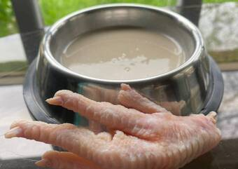
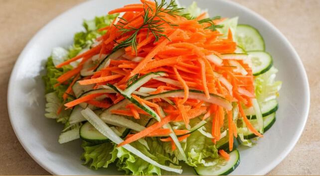
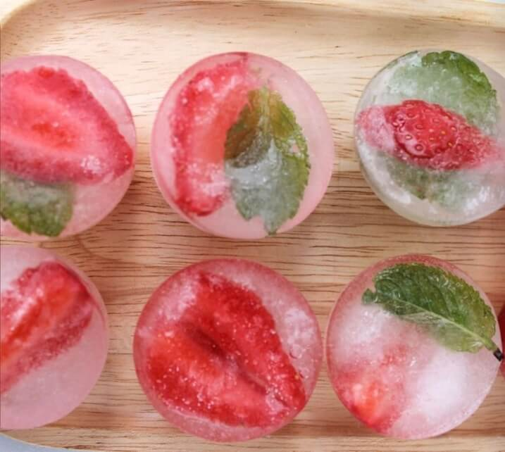
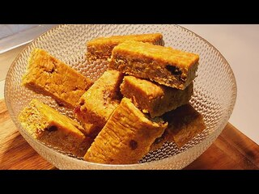
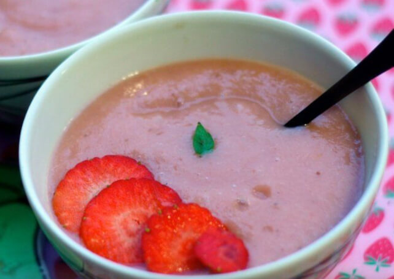

IMPORTANTE
Estas recetas han sido elaboradas a partir de recomendaciones veterinarias y la experiencia de los centros de recuperación.
Ninguna de las recetas aportadas sustituyen el alimento necesario del animal y siempre se recomienda que primero se consulte con un veterinario ante cualquier duda.
En caso de vomitos, diarrea o empeoramiento acuda lo antes posible a su veterinario.
Sopa de Moro (perros con diarrea)

Ingredientes:
- 1 litro de agua
- 3 o 4 zanahorias peladas y cortadas
- 1 pizca de sal (opcional)
Preparación
- Cocina la zanahoria 45 min. hasta que esté completamente blanda.
- Trituralá junto con el agua de cocción.
- Si el animal lo tolera, podrías añadirle un poco de arroz previamente cocido y cocinarlo todo junto 30 min más.
- Dejar enfriar y ofrecer en pequeñas cantidades.
Suero casero para perros y gatos

Ingredientes:
- 1 litro de agua hervida o embotellada
- 1 cuchara de azucar o 1/2 si el animal es pequeño
- 1 cucharadita de sal o 1/2 si el animal es pequeño
- Opcional: gotitas de limón y pizca de bicarbonato
Preparación
- Mezclar bien todos los ingredientes hasta que se dicuelvan.
- Ofrecer lentamente con jeringuilla sin aguja o a cucharadas.
- Hornea a 160ºC durante 15 min.
- Dejar enfriar y ofrecer en pequeñas cantidades.
Papilla nutritiva para gatos

Ingredientes:
- 1/2 pechuga de pollo sin sal ni especies.
- 1/4 de taza de agua o caldo de pollo sin sal.
- 1 cucharadita de aceite de salmon o de oliva virgen extra
- Opcional: 1 cucharadita de puré de calabaza sin triturar.
- Mezcla bien todos los ingredientes hasta que se disuelvan.
- Hornea a 160ºC durante 15 min.
- Ofrecer lentamente con jeringuilla sin aguja o a cucharadas.
- Dejar enfriar y ofrecer en pequeñas cantidades.
Ensalada Fortificante para Conejos y Cobayas

Ingredientes:
- 2 hojas de escarola o endibia
- 1/2 zanahoria rallada
- 1 hoja pequeña de albahaca fresca
- 1/4 de calabacín rallado
- 1 cucharadita de semillas de lino molidas (opcional)
Preparación
- Lava muy bien todas las verduras.
- Corta en trocitos pequeños.
- Mezcla todo.
- No almacenar ni reutilizar sobras.
Hielos refrescantes para Roedores

Ingredientes:
- 1/2 manzana (sin semillas)
- 1 fresa madura
- 50 ml de agua
- 1 hoja de menta fresca
Preparación
- Triturar la fruta con el agua y la menta.
- Verter en una cubitera pequeña para que los hielos no sean muy grandes.
- Congelar y ofrecer ocasionalmente para lamer (no como alimento diario y máximo 1).
Barritas de avena para roedores

Ingredientes:
- 1 taza de copos de avena
- 1/2 plátano maduro
- 1 cucharada de zanahoria rallada
Preparación
- Mezclar bien todos los ingredientes.
- Forma barritas pequeñas.
- Hornea a 160ºC durante 15 min.
- Dejar enfriar y ofrecer en pequeñas cantidades.
Papilla vegetal para iguanas verdes juveniles

Ingredientes:
- 1 hoja de diente de león
- 1 hoja de escarola o endibia
- 1 trocito de calabacín (crudo, sin piel)
- 1/4 de fresas maduras o 1/2 cucharadita de papaya (opcional, máximo 1 vez/semana)
- 1 pizca de calcio sin fósforo (sin D3 si tiene UVB)
- Agua mineral (unas gotas para mezclar)
Preparación
- Lava bien todos los ingredientes con agua corriente.
- Pica finamente las verduras y la fruta.
- Añade una pizca muy pequeña de calcio en polvo.
- Mezcla todos los ingredientes hasta formar una papilla húmeda pero sin exceso de agua.
- Retira lo que no se consuma en 1 hora.